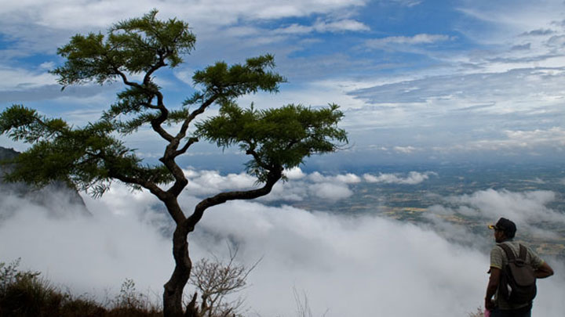

Nelliyampathy, a serene hill station nestled amidst the Western Ghats in Palakkad district, Kerala, offers a refreshing escape from the bustling city life. This enchanting destination is renowned for its lush green landscapes, misty mountains, and pleasant climate. The winding roads leading to Nelliyampathy present breathtaking views of tea plantations, valleys, and the majestic Western Ghats. The Pothundi Dam, a picturesque reservoir surrounded by lush greenery, is a popular spot for picnics and boating. For adventure enthusiasts, Nelliyampathy offers several trekking trails, leading to stunning viewpoints and hidden waterfalls like Seetharkundu Falls.
